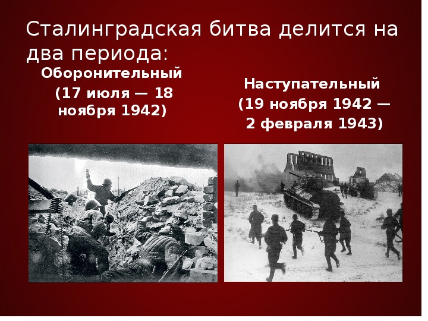

Оборонительный период длился с 17 июля по 18 ноября 1942 года. Фашисты пытались с ходу захватить Сталинград, а потому 23 августа 1942 бросили на город всю свою авиацию 4-ого воздушного флота. Целые кварталы превратились в развалины после бомбового удара такой силы. 28 июня началась операция «Фалль Блау», которая являлась частью стратегического плана нацистской Германии. Цель операции— захват нефтяных месторождений Северного Кавказа и Баку. Наступательный период длился с 19 ноября 1942 по 2 февраля 1943 года. Во время этого периода продолжалось советское контрнаступление, имевшее кодовое название Операция «Уран». «Уран» закончился решительной победой СССР, разгромом немецкой 6-ой армии. 12 декабря 1942 началась операция «Винтергевиттер»(нем. Зимняя буря). Красная армия победила 24 декабря; известный немецкий фельдмаршал Паулюс сдался в плен. Фашисты капитулировали, тем самым положив конец битве за Сталинград, которая продолжалась 200 дней и ночей; фашистская армия потеряла около 25% всех своих сил, среди которых было огромное количество офицеров.
